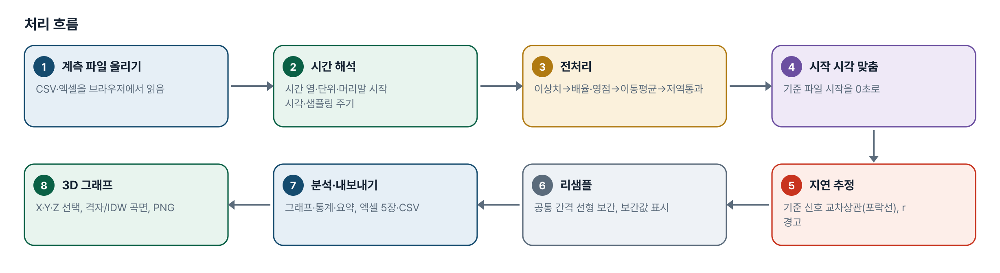
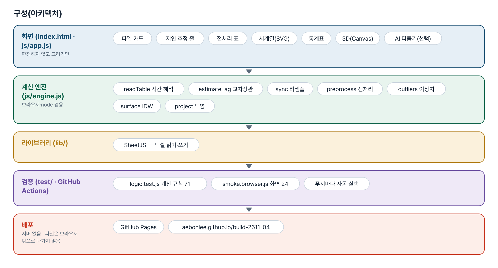
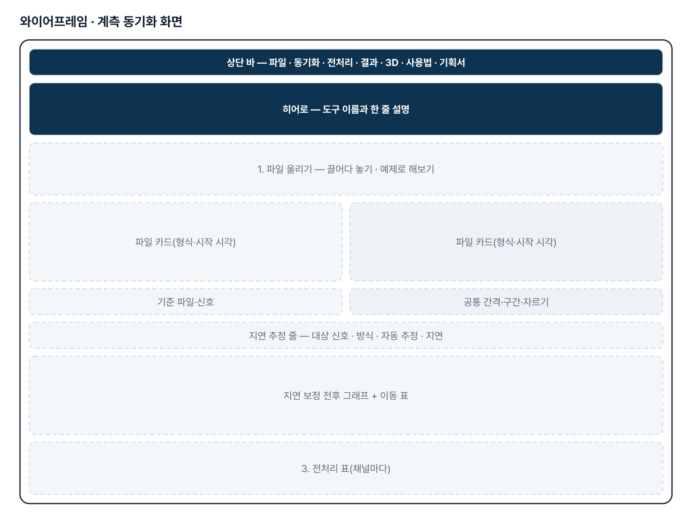
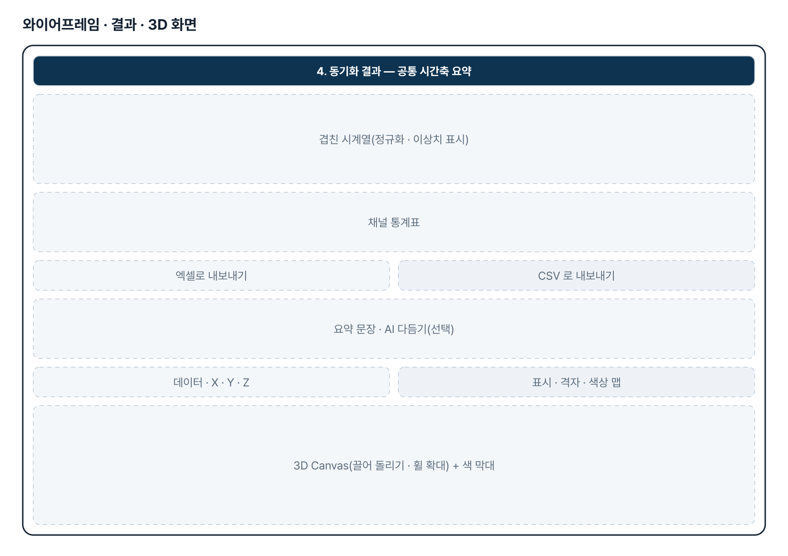
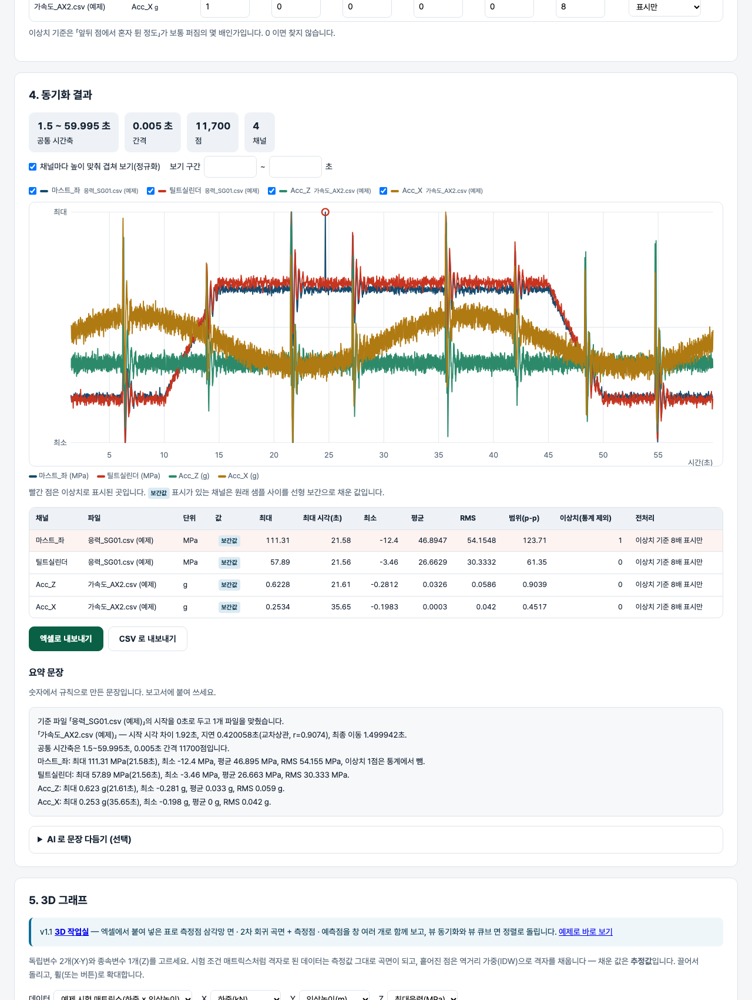

기획서 내려받기
파이프라인 · 아키텍처 · 와이어프레임 · 개발일지가 들어간 워드 문서입니다. 버전마다 따로 남깁니다.
| 버전 | 날짜 | 바뀐 점 | 파일 |
|---|---|---|---|
| v1.1 | 2026-11-04 | 기획자 메일(2026-11-04, 한신대 메일 「건설기계 AI 역량 강화 프로젝트 관련」, Plotly html 2개 + Mass×Height→Velocity Limit 표 + 2차 회귀 계수 f~a)과 패들릿 글(뷰 큐브 면 정렬 · 창 여러 개) 대응 / 3D 작업실(surface.html · js/surface.js): 붙여넣기 · 삼각망 면 · 2차 회귀 곡면+측정점 · 예측점 · 창 여러 개 · 뷰 동기화/개별 · 뷰 큐브 · 회귀식/계수 입력 · PNG · 엑셀 / 엔진: parsePaste · tableColumnsWithLabels · applyLabelMap · delaunay · quadFit/quadEval/quadStats/quadFormula/regGrid · cubeFaces/cubeHit · sampleLimit / 테스트 판정 71→119 · 화면 23→47 | 워드 내려받기 |
| v1.1.1 | 2026-11-13 | 사이트 주소로 들어오면 v1.1 「3D 그래프 작업실」(surface.html)이 먼저 열리게 함(기획자 요청 — 「이 링크를 최종으로」). v1.0 계측 데이터 처리 화면은 왼쪽 메뉴에서 그대로 열림 | 워드 내려받기 |
| v1.0 | 2026-11-02 | 첫 판 — 시간 동기화(시작 시각·교차상관·리샘플)·전처리·엑셀 내보내기·3D 그래프 / 기획서 워드 판·파이프라인·아키텍처·와이어프레임 추가 | 워드 내려받기 |
요구사항과 구현
| 기획서 요구 | 구현 |
|---|---|
| 서로 다른 계측기 데이터 Time Sync | 시작 시각 맞춤 → 기준 신호 교차상관 지연 추정(포락선/원신호) → 공통 간격 선형 보간 리샘플 |
| 시간 형식이 제각각 | 날짜+시각 · 시각만(자정 넘김) · 경과 초/ms · 엑셀 일련번호 · 시간 열 없음(샘플링 주기) |
| Raw Data 전처리 자동화 | 배율·오프셋 · 영점 · 이동평균 · 저역통과(앞뒤 두 번) · 이상치 표시/보간 · 구간 자르기 |
| 계측 데이터 자동 분석 | 채널 통계(최대·시각·최소·평균·RMS·p-p, 이상치 제외), 겹친 시계열, 보정 전후 그래프 |
| 보고서 자동 생성 | 규칙 기반 요약 문장 + (선택) AI 다듬기, 엑셀 5장 · CSV |
| 3D 그래프(독립 2 · 종속 1) | 격자면 측정값 곡면, 흩어지면 IDW 보간 곡면 · 산점 · 색상 맵 · 회전·확대 · PNG |
| (v1.1) 기획자 메일 2026-11-04: 삼각형 요소 면 · 회귀 곡면+포인트 · 회귀 곡면에 독립변수 2개를 넣은 값(포인트) 세 그래프를 함께, 뷰 싱크로나이즈와 개별 움직임, 엑셀에서 데이터를 붙여넣으면 전부 구현 | surface.html — 붙여넣기(탭·쉼표·공백, 라벨 칸 허용) → 창 3개(삼각망 면 · 회귀 곡면+측정점 · 회귀 곡면+예측점) + 창 더하기, 뷰 동기화/개별, 뷰 큐브 면 클릭 정렬(FRONT·REAR·LEFT·RIGHT·TOP·BOTTOM), 2차 회귀(최소제곱·R²·RMSE) 또는 계수 직접 입력, 예측값, PNG·엑셀 |
| (v1.1) 패들릿 댓글: 뷰 큐브(주사위 좌표계) 면을 선택하면 그 방향으로 정렬 · 창 여러 개 | cubeFaces/cubeHit — 보이는 면만 투영해 누른 면 판정, CUBE_VIEWS 로 카메라 이동. 창은 격자 배치, 창마다 종류 · PNG · 닫기 |
그림으로 보기





개발일지
2026-11-13 · 마무리 — 로그인 · 게시판 · 첫 화면(판 2026-11-13.1)
- 과정 마무리 묶음을 붙임(마산 2차수 과제와 같은 키트) — 로그인 전 첫 화면(사진 3장 · 기능 · 사용 순서 · 기획서), 회원가입 → 사용 신청 → 관리자 승인, 게시판 · 새 글 알림, 내 정보, 관리(구성원 승인 · 첫 화면 모양)
- Supabase 표 · 함수 · 정책은 전부 build261104_ 로 시작(auth.sql · board.sql · site.sql). 과정용 프로젝트에 적용했고, supabase/README.md 순서대로 본인 프로젝트로 옮길 수 있음
- 도구의 계산 · 판정 · 저장 방식은 그대로(업무 자료는 지금처럼 브라우저 안에서만 처리). 기획서 · 사용법 쪽은 로그인 없이 읽음
- 내 PC(파일로 열기 · localhost)에서는 로그인을 건너뜀 — 주소 끝에 ?auth=1 을 붙이면 로그인 화면을 볼 수 있음
2026-11-04 · v1.1 3D 작업실
- 요청 원문 1(패들릿 게시물 4130397002, 11-04 11:22): 「계측데이터 Post-processing은 일단 다른 프로젝트로 해서 별개로 하고 3D 그래프 생성 프로그램만 좀더 디테일하게 만들고 싶습니다. … 주사위 좌표계가 해당하는 면을 선택할 때 그 방향으로 View가 정렬 … 윈도우를 여러개에 차트를 표시」
- 요청 원문 2(메일 11-04 10:58, 한신대 메일): 「우측 그래프는 데이터로 삼각형 요소로 면을 생성 / 좌측 그래프는 회귀함수 적용하여 만들어진 surface 와 포인트를 함께 / mass_height_velocity_surface.html 은 회귀함수 그래프에 독립변수 2개를 넣을 때 값을 포인트와 함께 표시 / 3가지 형태의 그래프가 함께 보여질 수 있으면 … 뷰 싱크로나이즈 기능과 각 개별 움직임 … 엑셀에서 데이터를 붙여넣으면 앞서 설명드린 내용들이 전부 구현」 + 표(Mass 0~3500 × Height 300~4750 → Velocity Limit, 일부 Safe) + 회귀 계수 f e d c b a
- 메일 첨부 html 2개(Plotly 내장 4.6MB)는 탭 안에서 구조만 봤다(mesh3d · surface · scatter3d, 주석 「Regression Shell Mesh Surface」·「Measured Triangulated Surface」). 표의 값은 리포에 넣지 않았고 예제는 다른 가짜 계수로 만들었다. 메일의 계수 6개는 정확 2차 데이터 복원 테스트의 참값으로만 썼다.
- 판정 테스트 119 · 화면 테스트 47 통과
2026-11-02 · 첫 판
- 패들릿 build02 노현석 기획 1·2번을 작업 지시서(CLAUDE.md)로 옮기고 구현
- 계산 엔진 engine.js — 시간 해석, 교차상관 지연, 리샘플, 전처리, 이상치, 3D 보간·투영
- 화면 — 파일 카드·동기화·전처리·결과·내보내기·3D Canvas
- 계산 테스트 71 · 화면 테스트 24 통과, 배포